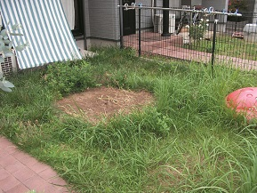
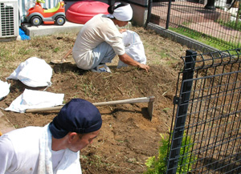
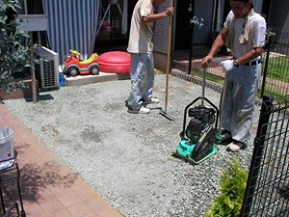
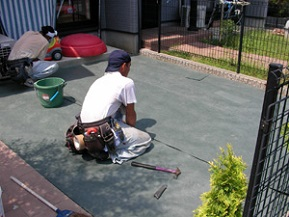
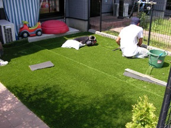
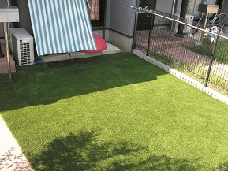

～ 施工の流れ ～
人工芝の販売・施工をおこなう「人工芝の芝人（しばんちゅ）坂戸店」。
こちらでは、実際に人工芝を施工する際の手順をご紹介します。
設置場所が土・砂利・コンクリート・アスファルトなど、下地の状況によって施工方法は変わりますが、状況に応じた施工方法によりどの下地でも施工が可能です。
| ① 最初の状態 | ② 雑草の処理 |
|---|---|
|

雑草が生い茂っていても大丈夫です。まずは雑草の処理をします。 |

草の根が残らないように、丁寧に雑草を取り除きます。 |
| ③ コンクリート質の砂を追加・転圧 | ④ 防草シート設置 |
|---|---|
|

雑草の処理が終わったら、コンクリート質の砂を入れて転圧をかけます。これにより、強固で平らな下地を作ります。（※砂土の種類は状況で変わります） |

下地が出来たら、防草シートの設置を行います。草が生えてこないように丁寧に敷き詰め固定していきます。 |
| ⑤ 人工芝設置 | ⑥ 施工完了 |
|---|---|
|

防草シートの上に丁寧に人工芝を敷いていきます。ジョイント部分や外周を中心に、ボンドやＵ字釘打ちでしっかりと固定します。 |

最後に施工で出たゴミを掃除して完了となります。継ぎ目のない綺麗なお庭の完成です。 |
費用の目安について
芝人坂戸店では、除草・下地処理から最終の人工芝設置完了まで全ての工程を自社で行なっており、余計な中間マージン等は発生しません。
そのため、高品質な人工芝と安定した施工品質を低価格でご提供しています。
【価格目安表（商品・材料・施工 全て込み）】
| 商品＼下地 | コンクリート等 | 土 | |||
|---|---|---|---|---|---|
| 雑草なし | 雑草あり | 天然芝撤去 | 砂利撤去 | ||
| SターフPREMIUM 40mm |
6,500円／㎡～ | 8,500円／㎡～ | 9,500円／㎡～ | 11,000円／㎡～ | 11,000円／㎡～ |
| Sターフ30mm | 6,000円／㎡～ | 8,000円／㎡～ | 9,000円／㎡～ | 10,500円／㎡～ | 10,500円／㎡～ |
| SターフCOOL | 9,900円／㎡～ | 12,000円／㎡～ | 13,000円／㎡～ | 14,000円／㎡～ | 14,000円／㎡～ |
| SB30CP1 | 4,600円／㎡～ | 6,800円／㎡～ | 7,900円／㎡～ | 9,000円／㎡～ | 9,000円／㎡～ |
※消費税込の金額です
※20㎡くらいを施工する場合
現場の状況や搬入経路、その他条件によって金額は変わります。
詳細な御見積りをご希望の方はぜひ無料訪問見積りをご依頼ください。